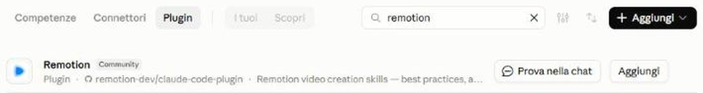
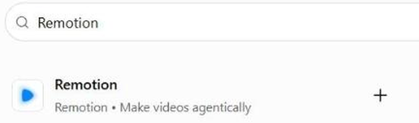

Remotion: il video scritto come codice
Tu descrivi cosa vuoi, l'AI scrive il progetto e il video lo vedi e lo esporti sul tuo computer. È la strada per titoli, grafiche e sottotitoli animati, ed è la stessa idea dei nostri sistemi video: il video costruito come codice
Cosa fa, e cosa non fa
- Crea video da zero: titoli, grafiche e grafici animati
- Aggiunge i sottotitoli al tuo video
- Si costruisce in codice, quindi lo rifai uguale ogni volta: perfetto per la sigla di una rubrica o per le scritte nel tuo stile
Cosa ti serve prima di cominciare
- Installa Node.js da nodejs.org: scegli la versione consigliata e segui l'installazione come per qualsiasi programma
- Scarica l'app desktop di Claude o di ChatGPT: il plugin parte da lì, non dal sito
- In Claude serve un piano a pagamento: il plugin parte dalla scheda Code, che nel piano gratuito non c'è. In ChatGPT parte da Codex, che nel piano gratuito è limitato
Metti Remotion in Claude
- Apri l'app desktop di Claude e scegli la scheda Code, quella con l'icona </> in alto a sinistra
- Apri «Personalizzazione», poi «Plugin» e «Scopri»: cerca «remotion» e premi «Aggiungi»
- Apri una sessione nella cartella dove vuoi il video (meglio una cartella nuova) e scrivi
/remotion:remotion-createseguito da cosa vuoi

ha l'etichetta «Community»: è normaleMetti Remotion in ChatGPT
- Apri l'app desktop di ChatGPT, scheda «Plugin»: cerca «Remotion» e premi il «+»
- Crea un nuovo progetto
- Scrivi
$remotione cosa vuoi, poi accetta il plugin quando te lo propone

«Make videos agentically»: è luiParti da qualcosa di piccolo
I prompt qui sotto sono scritti per Claude. In ChatGPT al posto di /remotion:remotion-create scrivi $remotion. Sostituisci le parti tra parentesi quadre con le tue: i colori in codice (per esempio #CD2471) li trovi nel tuo brand kit
Un titolo animato nei tuoi colori
/remotion:remotion-create Crea un video verticale 1080x1920 di 15 secondi: il titolo «[IL TUO TITOLO]» entra con un'animazione semplice, sfondo nei miei colori [colore 1 e colore 2 in codice], scritte nel font [nome del font]. Niente effetti a caso: deve sembrare mio, non un template
I sottotitoli al tuo video
/remotion:remotion-create Aggiungi i sottotitoli al video [nome del file] che ho messo in questa cartella. Scritte grandi, massimo 4 parole per volta, in basso ma sopra la zona dei comandi di Instagram. In ogni frase evidenzia la parola chiave in [colore in codice]
Un grafico animato
/remotion:remotion-create Crea un grafico animato con 5 barre, che crescono una alla volta: [etichetta 1: valore], [etichetta 2: valore], [etichetta 3: valore], [etichetta 4: valore], [etichetta 5: valore]. Nei miei colori [colori in codice], con il numero che compare sopra ogni barra
La sigla della tua rubrica, sempre uguale
Perché questa: è il punto forte di Remotion. Una sigla che torna identica ogni settimana fa riconoscere la rubrica, e la rifai con un comando invece che a mano
/remotion:remotion-create Crea una sigla di 3 secondi per la mia rubrica «[nome della rubrica]», nei colori e nel font della scheda qui sotto. Deve essere sempre uguale, così chi mi segue la riconosce: salvala come modello in cui cambio solo il titolo della puntata [incolla la scheda del video]
Remotion è gratis, con una condizione
Per te e per le aziende fino a 3 persone, uso commerciale compreso
Da 4 persone in su serve la licenza aziendale: per chi crea video sono 25 $ al mese a persona. Dettagli su remotion.dev

Remotion costruisce quello che gli descrivi. Cosa descrivergli, e per chi, è strategia: Stratego è la piattaforma di Unlike che ti crea la strategia social e il piano editoriale, con le domande giuste e il nostro metodo davanti
Mettiti in lista d'attesa →